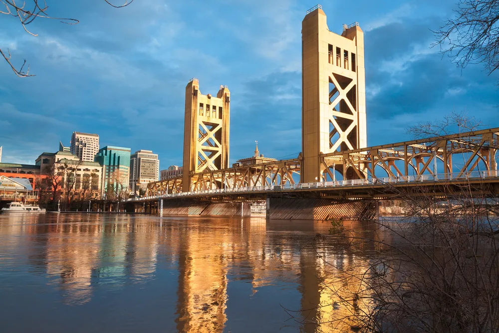

Demographic
Sacramento, California's vibrant and diverse capital city, boasts a fascinating demographic landscape that reflects the ongoing evolution of the region. With a population of over half a million residents, Sacramento is marked by its rich cultural mosaic. The city is home to a sizeable Hispanic and Latino population, contributing to its status as one of the most ethnically diverse cities in the United States. This demographic diversity extends to African Americans, Asians, and White residents, creating a dynamic blend of cultures, traditions, and languages. One notable aspect of Sacramento's demographic composition is its youthful population. The city is home to a significant number of young professionals, students, and families, drawn by its strong job market, educational institutions, and a relatively lower cost of living compared to other major California cities. This youthful energy has contributed to the city's vibrant arts and entertainment scene, making it a hub for creativity and innovation. As Sacramento's economy continues to grow and diversify, its demographic landscape also evolves. The city is becoming increasingly multicultural, and various ethnic enclaves and neighborhoods thrive, offering unique experiences and communities for residents and visitors alike. This dynamic mix of people, cultures, and backgrounds defines Sacramento's unique identity, making it a welcoming and inclusive place to live and explore.
Statistics
Sacramento, the capital of California, is a city with a rich tapestry of statistics that reflect its dynamic and diverse character. As of my last knowledge update in January 2022, Sacramento had a population of approximately 515,000 people, making it the sixth-largest city in California. The city's growth has been steady, driven by factors like its position as a hub for government, education, and healthcare in the region. Additionally, Sacramento is known for its cultural diversity, with various ethnicities and cultures contributing to its vibrant social landscape. Economically, Sacramento plays a significant role in California's economy. It has a diverse economic base, including government jobs, healthcare, education, agriculture, and a growing technology sector. In 2022, the median household income in Sacramento was around $60,000, though this number can vary significantly depending on the neighborhood and specific job opportunities. The city's cost of living is generally more affordable than other major California cities like San Francisco and Los Angeles, making it an attractive option for those seeking a high quality of life without the extreme costs associated with other urban centers in the state. Sacramento is also renowned for its educational institutions and its commitment to green initiatives. It is home to the California State University, Sacramento (Sac State), which serves as a prominent educational and research hub. In terms of sustainability, the city has made significant strides in recent years to reduce its carbon footprint, enhance public transportation, and invest in green infrastructure. Its efforts align with California's broader goals of environmental conservation and sustainability. These statistics and characteristics underscore Sacramento's significance in the Golden State, and it continues to evolve and develop as a thriving metropolitan area. For the most up-to-date statistics, it's advisable to consult the latest reports and data sources available.
Events
Sacramento, California, hosts a wide array of events throughout the year, catering to a diverse range of interests and attracting visitors from near and far. One of the city's most notable events is the Sacramento Music Festival, previously known as the Sacramento Jazz Festival and Jubilee. This multi-day celebration of music features a mix of jazz, blues, and various other genres, filling the streets with lively performances and creating a festive atmosphere. The California State Fair is another major event that brings the community together each summer, offering carnival rides, live entertainment, agricultural exhibits, and a showcase of the state's culture and industry. The city's rich history and cultural heritage are celebrated annually during Gold Rush Days. This event transforms the historic Old Sacramento district into a lively, 1850s Gold Rush-era town, complete with costumed reenactors, gold panning, and historical reenactments. It's a fascinating journey back in time for both locals and tourists. Additionally, the Farm-to-Fork Festival highlights Sacramento's prominence in California's agricultural industry. This event showcases the region's farm-to-fork movement, emphasizing locally sourced food and beverages and promoting sustainability. Furthermore, the Sacramento area offers a variety of events related to sports, art, and community engagement. Sacramento hosts professional sports teams, including the Sacramento Kings (NBA) and the Sacramento Republic FC (USL Championship). The city also celebrates creativity through events like the Sacramento Arts Festival, which features local and national artists, craftsmen, and their works. Community festivals, food events, and cultural celebrations are frequent occurrences, providing residents and visitors with an ever-evolving calendar of exciting and enriching experiences. These events collectively contribute to Sacramento's vibrant and diverse cultural scene, offering something for everyone throughout the year. To stay updated on specific events and their schedules, it's recommended to check with local event listings and official websites for the most current information.
Attractions



Number of Visits